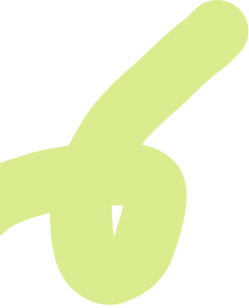
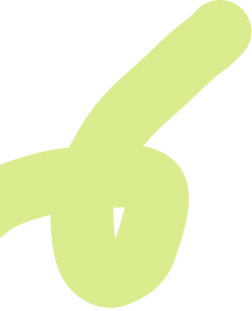

nach meiner ausbildung zur polygrafin habe ich gemerkt,
dass gestaltung für mich mehr ist als ästhetik.
ich arbeite seit 5 jahren in einer agentur, studiere multimedia production
und bewege mich zwischen design, konzept und kommunikation.
was ich mache
grafikdesign
Ich gestalte visuelle Auftritte – von Logos und Plakaten bis zu Editorials
oder Kampagnenelementen. Meine Gestaltung sieht nicht nur gut aus,
sondern vermittelt die Botschaften klar und macht Inhalte verständlich.
code
Ich habe ein solides Verständnis für HTML, CSS und JavaScript und setze kleinere Websites auch selbst um. Diese technische Perspektive hilft mir, realistisch zu gestalten und mit Entwickler:innen auf Augenhöhe zu arbeiten.
webdesign & ui
Bei Websites und Appdesigns liegt mein Fokus vor allem auf der Nutzerführung und visuelle Konsistenz. Ich arbeite in Figma und denke früh an Interaktionen, responsive Verhalten und Content-Hierarchie – Design soll nicht nur wirken, sondern funktionieren.
konzept & kommunikation
Ich begleite Projekte von der ersten Idee bis zur Umsetzung – mit einem Blick für Story, Zielgruppe und Wirkung. Ich mag es, komplexe Inhalte in klare, visuelle Systeme zu übersetzen und Design mit Kommunikationsgedanken zu verbinden.
ich starte projekte gern
mit fragen, nicht mit farben.
mir ist wichtig zu verstehen, wie
etwas funktioniert, bevor es
schön aussieht.
 
